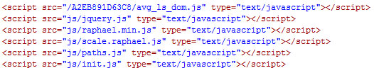
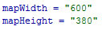
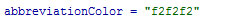
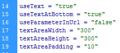
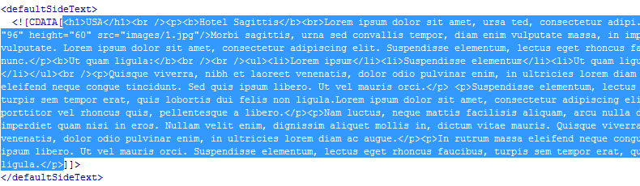
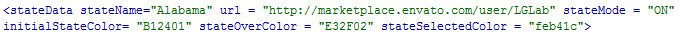
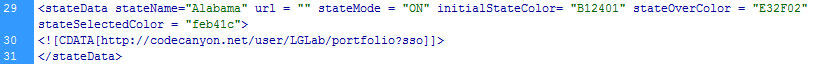
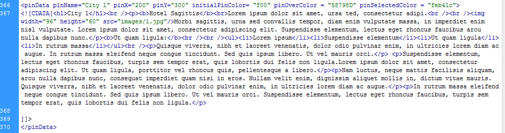

“Interactive SVG USA Map” Documentation by “LGLab” v1.0
“Interactive SVG USA Map”
Created: 08/12/2011
By: LGLab
www.motionflashdesigns.com
Thank you for purchasing my theme. If you have any questions that are beyond the scope of this help file, please feel free to email via my user page contact form here. Thanks so much!
Table of Contents
- Installation
- Changing the size of the map
- General settings
- Text option
- Default text
- Individual state settings
- Using parameters in urls
- Creating pins
- Responsive option
- Change log
A) Installation - top
To add the map to your website, open the index.html for the version you have chosen, and start by importing the fonts.css and map.css withing the head tag of your site:

Then import all the js files within the head tag as well:
Make sure to also copy and paste all these files in your website directory keeping the same structure relative to the page you want to load the map into.
Finally copy/paste the mapWrapper div and its content where you want to include the map on your page:

B) Changing the size of the map - top
The map's original dimensions are 930px wide by 590px high, try to keep as close to this ratio when resizing the map. To change the size open the usaMapSettings.xml file located in the xml folder, and at the top adjust the width and height to your desired ones:
Note that you should always set the full width of the map, regardless of whether you are using the text on the side as the actual map size will then be calculated automatically based on the width of the side text.
C) General settings - top
If you wish to disable some of the states, you can choose a different color for those by adjusting the offColor parameter in the xml file:

You can change the stroke color for the map by adjusting the strokeColor parameter with your color:

You can change the state abbreviation text color for the map by adjusting the abbreviationColor parameter with your color:
D)Text option - top
The simple version of the map navigates to an external URL when a state is clicked, you can however chose to display some text either to the right as a sidebar, or as a text area below the map. To do so set the useText parameter to true. the default position of the text will be to the right, if you wish to have it below the map, also set the useTextAtBottom parameter to true. You can then adjust the textAreaWidth, textAreaHeight and textAreaPadding parameters accordingly. Note that for the sidetext only the textAreaWidth will be considered as the height will be calculated depending on the height of the map, and vice versa if the text is at the bottom of the map, it will have the height set for the textAreaHeight parameter and its width will always be the width of the map:
E) Default text - top
If you choose to use the version with the text, you can set a default text content when the map first loads before a user clicks any state. To do so update the text content within the CDATA of the defaultSideText node:
F) Individual state settings - top
In the xml file, each state is defined within a stateData node, everything within each of these tags belongs to that state. The first part of the stateData nodes include parameters for that particular state which you can adjust:
stateName: The text that will appear in the tooltip.
url: The URL to navigate to when a state is clicked in the simple version.
stateMode: Determines if that state is active or not, set to OFF to disable a state.
initialStateColor: The default color for that state.
stateOverColor: The color for that state when the user mouses over it.
stateSelectedColor: The color for that state when the user has clicked it.
Finally for each state, if you have chosen the version of the map with side text, you can change that text for each state within the CDATA of each stateData tag:

G) Using parameters in urls - top
If you are using the simple version and which to link to urls including parameters, note that the "?" and "&" signs in the url will break the xml file if used in the url attribute. Instead, set the useParameterInUrl parameter to true at the top of the xml file, and add your urls within the cdata tags where the text option is by default.
H) Creating pins - top
Pins are set in a similar manner as the states themselves and are located at the bottom of the xml file, each pin being set by a pinData node. You can create as many as you want simply duplicate the pinData node. The main difference being that the pins hace a pinX and pinY parameter to position them on the map. Note that the pixel location is relative the the map at its original size (930x590).
I) Responsive Option - top
The map is now responsive by default, you can turn responsive off by setting the responsive parameter to false at the top of the xml file. The responsive sizes are handled in a similar way to css media queries but in the init.js file at the bottom within the responsiveResize function so you can adjust responsive sizes there if you wish.
J) Change log - top
Update V1.2 - 20/11/2012
I have added state abbreviation text on each state and create sone thumbnail navigation items for smaller states. If you have purchased this map prior to this date and would like to update it, overwrite the init.js, paths.js and raphael.js. This should not affect your current xml configuration. Note however that a new parameter has been added to the usaMapSettings.xml file for the abbreviations text color, it is situated in the main settings at the top of the xml: abbreviationColor = "f2f2f2" - You can just copy/paste this new parameter in your existing xml file at the same location.
Update V1.3 - 18/02/2013
I have added an example for bottom text instead of side text. Also I have updated the jquery file to latest 1.9.1 version, to update your map, overwrite your jquery.js file with the new one, as well as the init.js file.
Update V2 - 18/10/2013
Added responsive option.
Added pin option.
Fixed text hover issue in IE.
Init.js and the xml file have changed, if you wish to use this latest version, overwrite your init.js. You will also have to use all the latest parameters set at the top of the xml so overwrite those also, but you can keep your settings for each state.